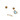
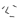
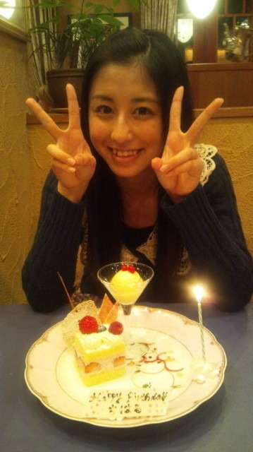

| 2012/02 18 Sat | 2月17日♪ (ｏ・ω・) ノ)) |
斎藤ちはる、昨日
2月17日
に15歳になりました！
いえーい！
みんなからおめでとうっ
って祝ってもらってほんとちはるは幸せです…°・(ノД`)・°・
去年の夏までは、ほんとにどこにでもいる
普通の中学生でした。
だから去年14歳になったときも、いつも通りの誕生日で、
まさか１年後にこんなアイドルになってるなんて思ってもみなかった。
いつも側で支えてくれている
家族がいて、
友達がいて、
メンバーのみんながいて、
そしてファンの皆さまがいて…
本当に本当に私は幸せ者です。

何度皆さまに励まされたことか…
数えきれません。
感謝の気持ちが大きすぎて、
どう伝えればいいのか…
ちゃんと伝わってますか？(´・ω・｀)
まだまだかな…

もっともっとだと思う。
だってまだ恩返ししてないもの。
選抜という目標があるもの。
ううん
私はもっと上をいきたい。
日本を代表するアイドルに私はなりたい。
絶対いつかはなってみせるから。
待っててください。
そして昨日、誕生日を迎えて、
もう甘えてられない！と思いました。
14歳だから、中学生だから、って許されることもあったと思う。
でも今日からは15歳、もうすぐ高校生。
斎藤ちはる、変わってみせます。
必ず。
(｀・ω・´)
大好きなメンバーのみんな、
大好きなファンの皆さん、
大好きな家族、
大好きな友達、
ほんとに大好きな方々に囲まれて、
こうして誕生日を迎えられて、
何度もゅうようだけど
幸せです。
幸せ。
 幸
幸
毎回コメントして下さってる皆さんっ
ほんとありがとうございます

いつもコメントでみるから名前覚えてます！
握手会やイベントで言って下さい。
初めてコメントして下さった皆さんっ
ほんとありがとうございます
初コメとかゆわれると高まります！( ´艸｀)
新しい方々が増えていくのはやっぱり嬉しすぎる。
１回でも私のブログを見てくださった皆さんっ
ほんとありがとうございます
皆さんの貴重な時間をブログのために割いてくださって…
ちょっとでも見ていてくれるのはすごく嬉しい。
感謝します。
ほんとにありがとう！
そして大好きだぁーっ♪(/ω＼
*
)
前回のブログにおめでとうってコメントしてくれた方々ありがとう
Twitterに書いてくれた方々ありがとう
ふふふっ
うふふふっ
やっぱりにやけちゃう
15歳。
fifteen。
3/4成人。
やっぱりいい響きだぁー(*´д｀*)
ほんとにありがとう！

ケーキと共に。
(。・_・。)ノ
美味しそうでしょー？
美味しかったよー！
楽しい１年にします！(ゝω・´
★
)
ほんとにほんとにありがとう！
ちはるん
♪(ｏ・ω・)ノ))
コメント(71)
2012/02/18 01:04